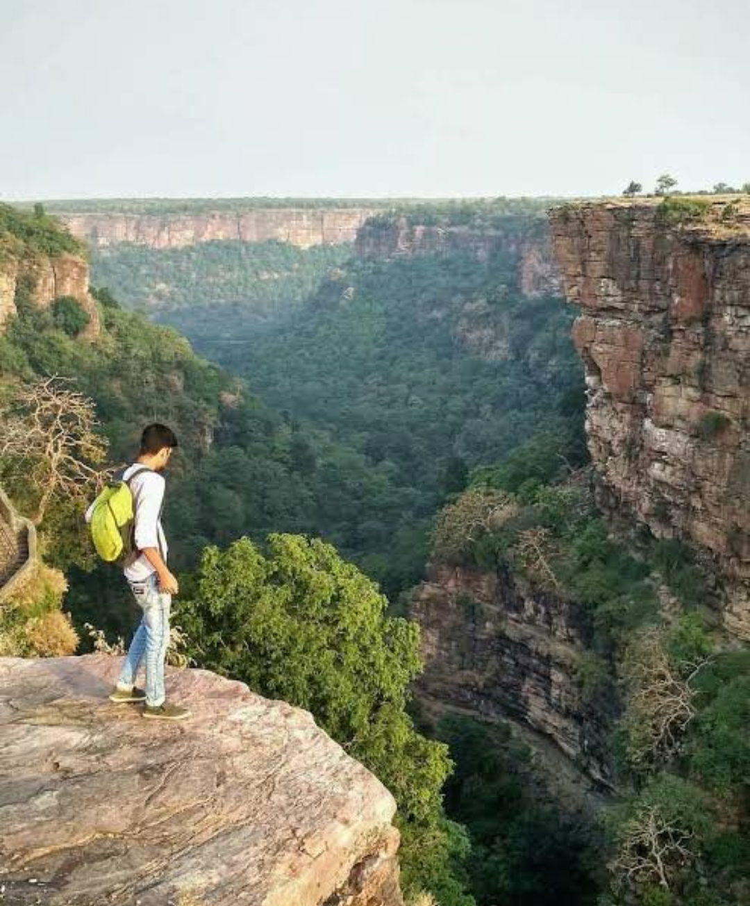

When was the last time you visited the peri-urban areas of your city?
Was it when you went out to spend some leisure time with your family
and friends? Or was it when you wanted to yourself to be lost amidst
the greens?

The outskirts of maximum cities are sparsely populated. Some have
town-like establishments, some contain factories and educational
institutes, others are blessed with architectural or God-made wonders.
When the city outskirts possess beautiful landscapes, like those of
Rajasthan and Himachal Pradesh, people tend to swing in with their
loved ones to enjoy quality time in the lap of nature. Large cliffs
and gorges give an aesthetical imprint on our minds and these regions
are frequented by youth mostly. We make cherishing memories at such
places. But have you ever wondered what else fascinating and
intriguing experiences await your presence?
It was just a regular March evening, while travelling from Udaipur to
Kota on the highway, I found a beautiful Golden Retriever with a
collar around. It was wandering about the small vendors, searching and
sniffing food. It was a domestic one, evident through the collar. I
picked it up and took it along with me to Kota. I found the dog was
ill, he was suffering from some communicable skin infection. Most
probably, his disease was the reason for his owner to leave him alone
in the outskirts. In India, you will find a Golden Retriever for
around 10000-20000 as the internet suggests, but I found this Golden
Treasure for free. I spent some amount of money for the treatment and
today he is fit-n-fine. I have found a great companion in him and he
scales down my loneliness to a large extent.
Recently, I read an article about spotting a Leopard in the outskirts
of Hyderabad, Chilkur forest area. People would have been amazed at
the sight of such an animal. Although fear arises, but we Indians are
scarred of nothing. People pay to get to see these animals, but we are
blessed to have their glimpse for free. Populace of outskirts suffer a
number of problems. The people living around the cities face scarcity
of water supply and electricity. They live in their own world where
Google does not exist. They dwell in cottages made up of mud devoid of
modern amenities. But these human beings are happier in their own
world than any other city-resident. They portray true emotions that
are long forgotten in our rat-race lives. Meeting them and spending
few minutes with them has always made my highway drives a memorable
experience. Life happens out of your comfort zone. Pack your
necessities and travel to your nearest outskirts to find un-expected
paths. Fall into the lap of nature or embrace the village-men, talk to
those small vendors rather asking for directions, leave a trail behind
and find new roads, explore yourself. Life is nothing but a daring
adventure.